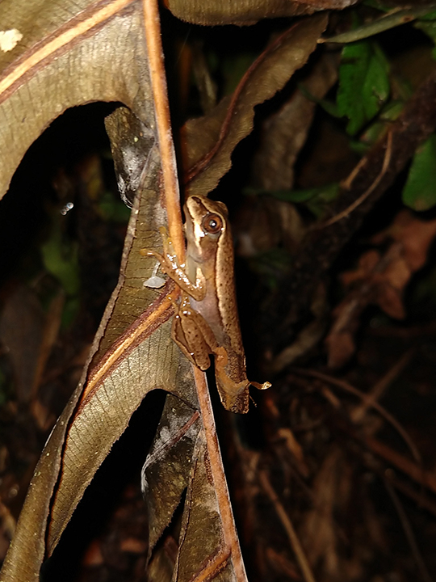
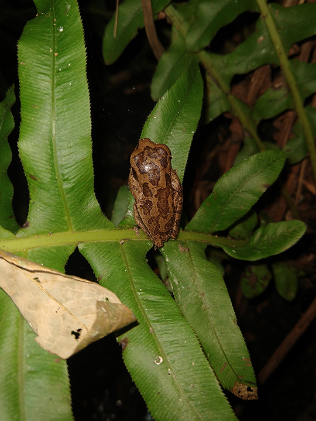
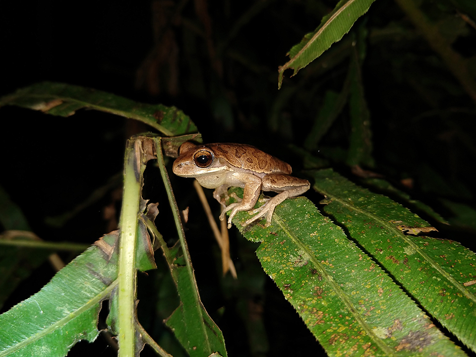

Perereca marrom claro a castanho amarelada, possui pintas marrom escuro nas pernas e nas costas, uma linha grossa, também marrom, vai da narina até o olho. Arborícola, geralmente é encontrada em riachos de fundo lodoso dentro de matas. Mais ativa durante os meses mais quentes é encontrada mais facilmente de Outubro a Fevereiro. Machos vocalizam a partir de galhos e da vegetação baixa da borda dos riachos. Os ovos são colocados na água, aderidos à vegetação ou às rochas. Não é venenosa. Ocorre nos estados do Paraná, Santa Catarina e Rio Grande do Sul.
  